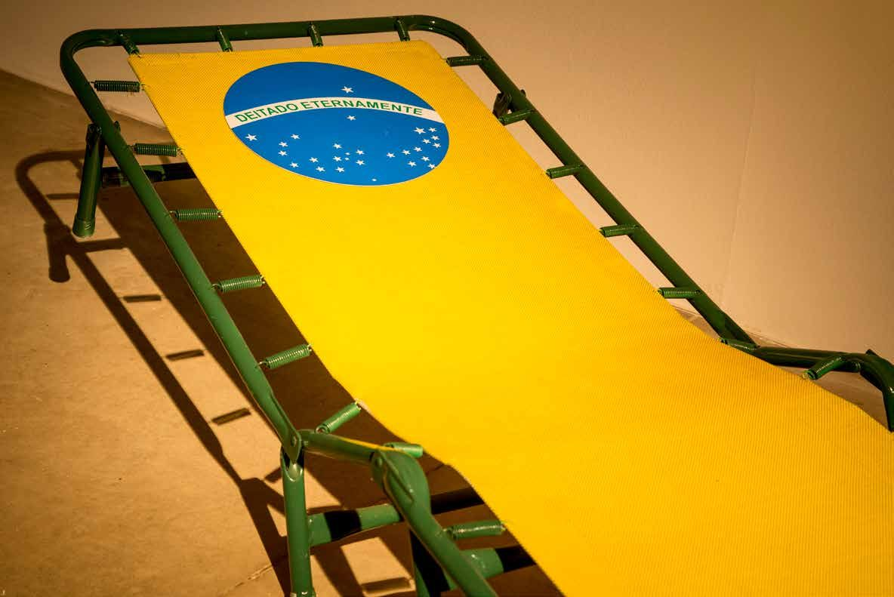
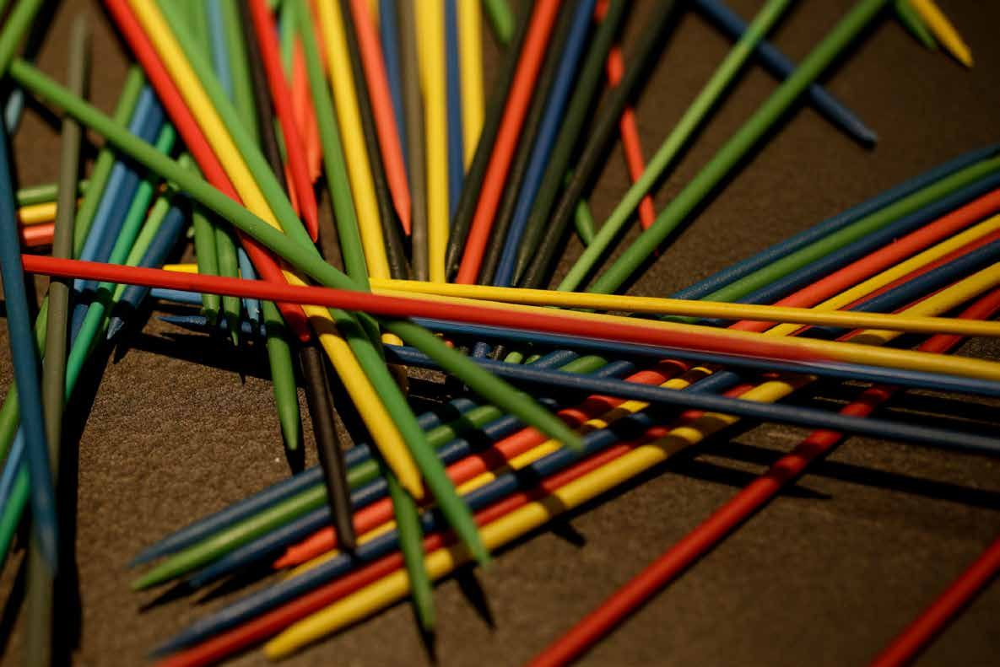
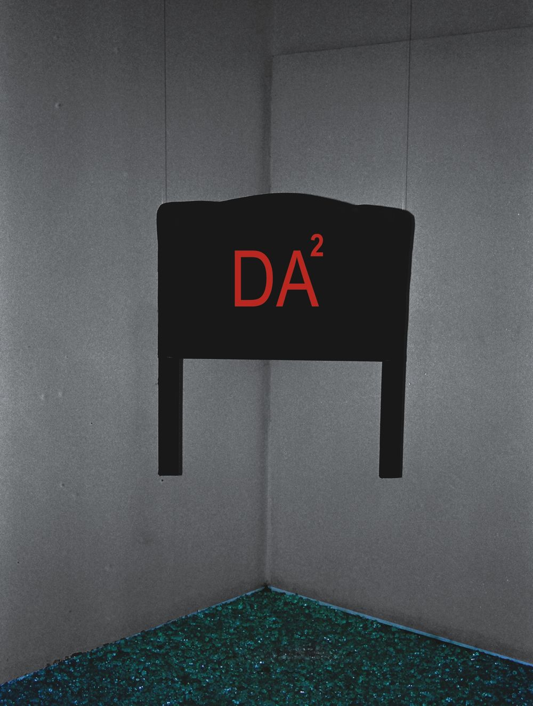
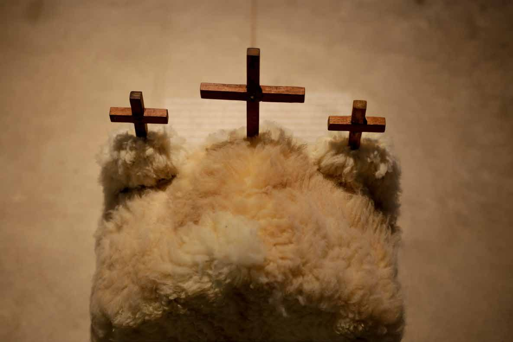
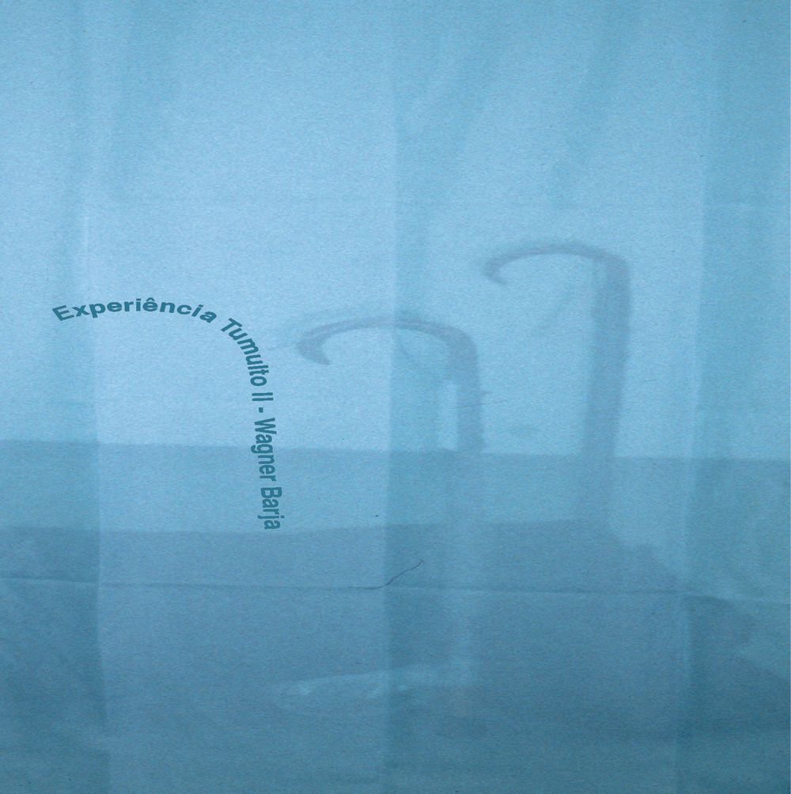
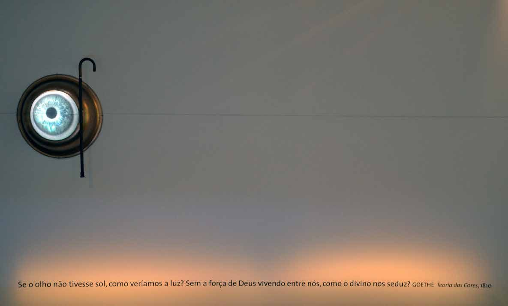
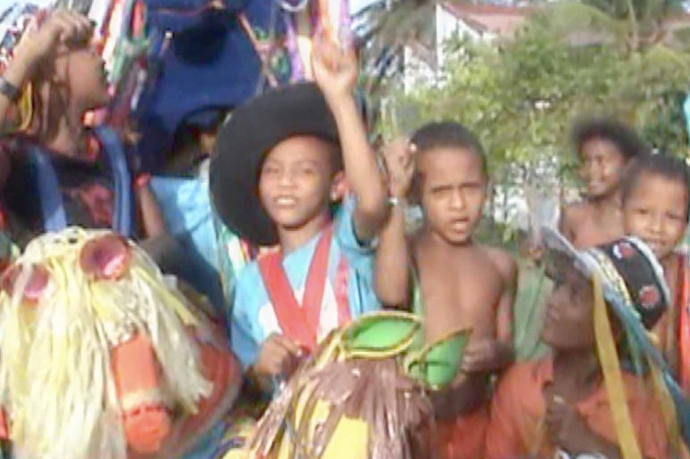
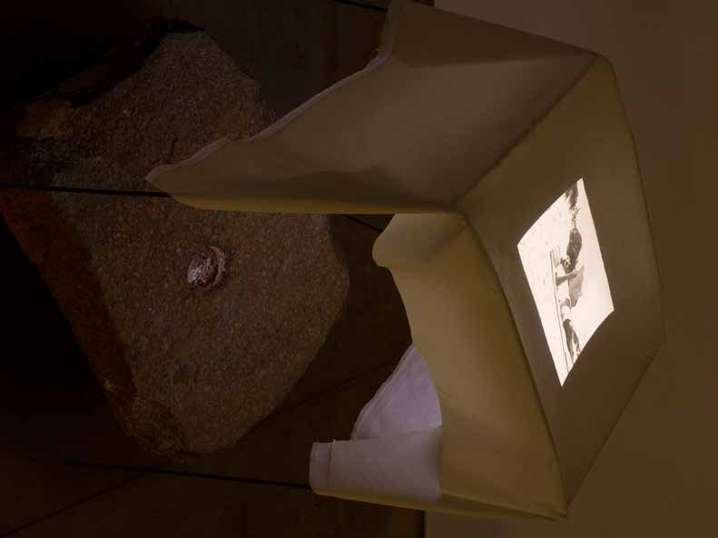

Produção
Obras
A produção de Wagner Barja em instalações, objetos, vídeo e intervenções, em ordem cronológica — com links para as páginas do livro onde cada obra aparece com imagens.
Todas as obras
27 obras, da mais antiga à mais recente. Clique numa imagem para abrir a página da obra, com fotos, textos críticos e vídeos.
 Armadilhas Semânticas
Armadilhas Semânticas
 Cubo Cruz Lápide
Cubo Cruz Lápide

Deitado Eternamente Neoconcreto
Neoconcreto
 O Casamento de Márcia X com Marcel Duchamp
O Casamento de Márcia X com Marcel Duchamp
 O Profeta e a Jaguatirica
O Profeta e a Jaguatirica
 Expressosionismo
Expressosionismo

Pega Monet, Pega Manet
DA2 H2O Monet
H2O Monet
 Queops Brasilis
Queops Brasilis
 Ser ou Não Ser ao Gullar
Ser ou Não Ser ao Gullar

São João Beuys Cultura x Natureza = Barbárie
Cultura x Natureza = Barbárie

Jardim de Bengalas
O Sol de Goethe Caverna
Caverna
 Medusa
Medusa
 Agulha no Palheiro
Agulha no Palheiro
 TV Anal
TV Anal

A Vitória do Gallo
Despacho na Duna O Cru e o Cozido
O Cru e o Cozido
 Cegomóvel Hermógenes
Cegomóvel Hermógenes
 De Onde Vem a Escuridão
De Onde Vem a Escuridão
 FIKE
FIKE
 Poema à Vista
Poema à Vista
Obras em movimento
9 vídeosIntervenções, performances e vídeos de Wagner Barja — versões leves, em reprodução direta no site.
Imprensa e clipping
Matérias que comentam ou reproduzem obras de Wagner Barja.
- Exposição no DF reúne obras de 30 anos de carreira de Wagner Barja2015
- Experiência Tumulto III — Antologia da Obra de Wagner Barja (catálogo digital CCBB)2015
- Andrea Rehder comemora 15 anos com exposição inédita de César Oiticica Filho (sobre Tumulto IV / Jonas II, 2018)2024
- Cartografias afetivas / agenda — Experiência Tumulto IV – Jonas II (2018 e 2026, Andrea Rehder)2018
- Conheça artistas que integram a mostra Brasil Futuro: as Formas da Democracia (obra Deitado Eternamente)2023
- Ato criativo em meio digital — Wagner Barja: Arapucas Semânticas e arte computacional (conferência)2021
- Museu da República — curador acumula desafios, 'xerife sem estrela'2007
- Censura velada ou escancarada? (depoimento de Wagner Barja sobre gestão e arte)2020
- Wagner Barja no projeto Fuga / notas biográficas2019
- Conversas: resistência e convergência (bio e exposições de Wagner Barja)2019